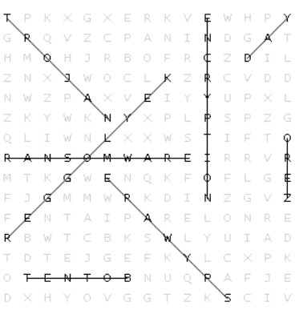

üîê DECODE & DEFEND Answers
-
1. B. B. Viruses need user action to spread; worms spread automatically
A Zero-Day vulnerability is a security loophole in software that the vendor doesn’t know about but hackers have already discovered and may exploit before a patch is released.
-
2. B. B. Reusing a password hash to authenticate without knowing the password
2FA adds an extra step (like an OTP, app confirmation, or fingerprint) after the password, making it harder for attackers to access your account even if your password is leaked.
-
3. C. Using psychological tricks to manipulate people into giving up confidential information
Social engineering attacks exploit human behavior (like trust or urgency) rather than technical flaws — e.g., fake calls or emails pretending to be from banks.
-
4. A. Trojan horse
If you use the same password everywhere and one site is breached, attackers can try the same credentials across many services — a method called credential stuffing.
-
5. B. Eavesdropping on data between you and the website
In a MITM attack, hackers secretly intercept or alter messages between two parties (e.g., you and a website) without either party knowing, especially on insecure networks.
üî§ CIPHER SCRAMBLE Answers
